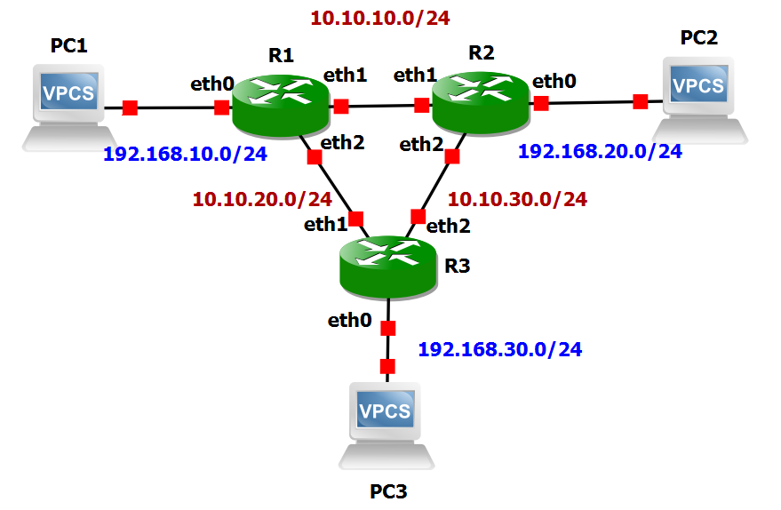
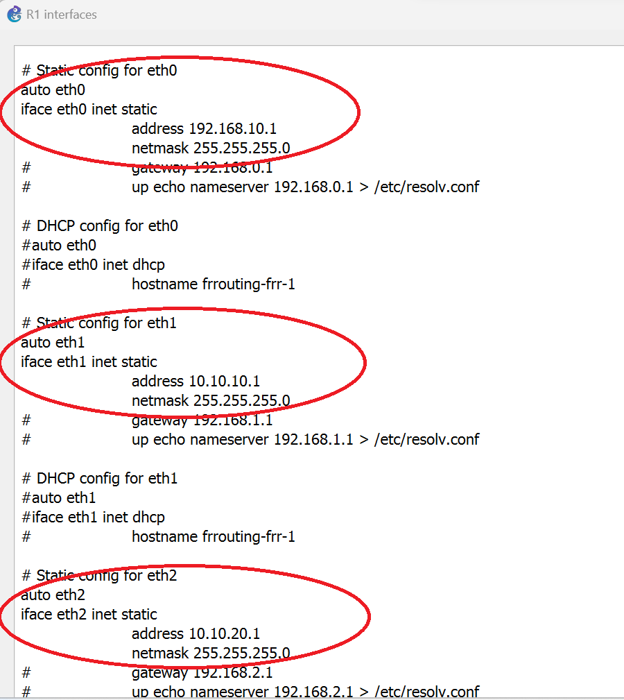
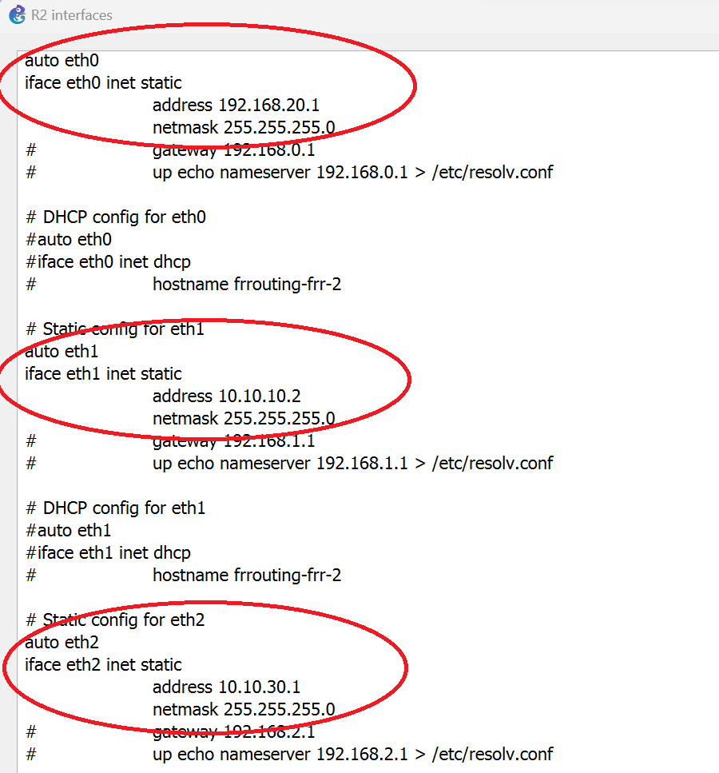
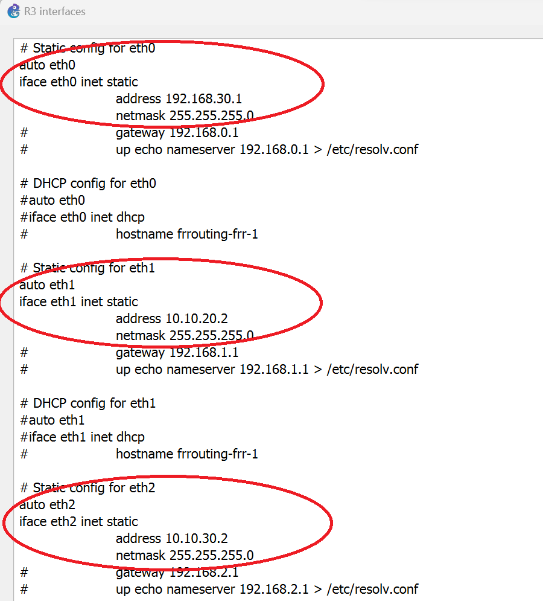
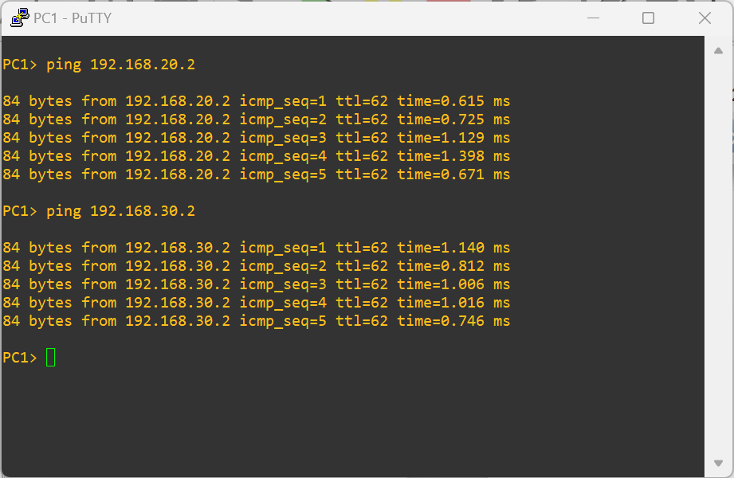
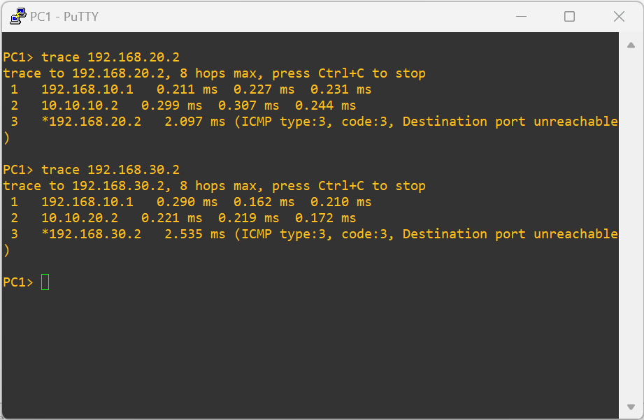
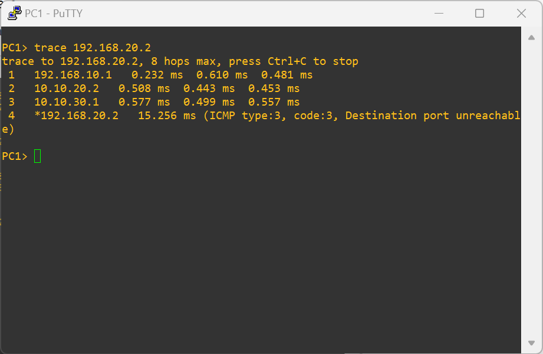

The purpose of this lab is to show how three different subnets can be connected by means of three routers connected in a triangle topology.
Routes between subnets are established by means of the OSPF protocol. All the three routers are configured to belong to the same area.
cat /proc/sys/net/ipv4/ip_forwardand verifying that the obtained output is 1.
net.ipv4.ip_forward = 1in the configuration file /etc/sysctl.conf that can be edited with the nano text editor through the command:
sudo nano /etc/sysctl.conf


/etc/frr to the Additional directories to make persistent.

/etc/frr to the Additional directories to make persistent.

/etc/frr to the Additional directories to make persistent.
ip 192.168.10.2/24 192.168.10.1
ip 192.168.20.2/24 192.168.20.1
ip 192.168.30.2/24 192.168.30.1
echo "service integrated-vtysh-config" > /etc/frr/vtysh.conf chown frr:frr /etc/frr/vtysh.confThen edit the
/etc/frr/daemons file to ensure that the ospfd daemon is enabled.
ospfd=yesEdit the
/etc/frr/frr.conf file to make it appear as the following:
frr version 8.1_git frr defaults traditional hostname R1 no ipv6 forwarding service integrated-vtysh-config ! interface eth0 ip address 192.168.10.1/24 ip ospf passive ! interface eth1 ip address 10.10.10.1/24 ! interface eth2 ip address 10.10.20.1/24 ! interface lo ip address 10.0.0.1/32 ip ospf passive ! router ospf network 192.168.10.0/24 area 0.0.0.0 network 10.10.10.0/24 area 0.0.0.0 network 10.10.20.0/24 area 0.0.0.0 ! line vty !Fix
/etc/frr/frr.conf ownership:
chown frr:frr /etc/frr/frr.confFinally, stop and restart the R1 container to start the ospfd daemon.
echo "service integrated-vtysh-config" > /etc/frr/vtysh.conf chown frr:frr /etc/frr/vtysh.confThen edit the
/etc/frr/daemons file to ensure that the ospfd daemon is enabled.
ospfd=yesEdit the
/etc/frr/frr.conf file to make it appear as the following:
frr version 8.1_git frr defaults traditional hostname R2 no ipv6 forwarding service integrated-vtysh-config ! interface eth0 ip address 192.168.20.1/24 ip ospf passive ! interface eth1 ip address 10.10.10.2/24 ! interface eth2 ip address 10.10.30.1/24 ! interface lo ip address 10.0.0.2/32 ip ospf passive ! router ospf network 192.168.20.0/24 area 0.0.0.0 network 10.10.10.0/24 area 0.0.0.0 network 10.10.30.0/24 area 0.0.0.0 ! line vty !Fix
/etc/frr/frr.conf ownership:
chown frr:frr /etc/frr/frr.confFinally, stop and restart the R2 container to start the ospfd daemon.
echo "service integrated-vtysh-config" > /etc/frr/vtysh.conf chown frr:frr /etc/frr/vtysh.confThen edit the
/etc/frr/daemons file to ensure that the ospfd daemon is enabled.
ospfd=yesFinally, edit the
/etc/frr/frr.conf file to make it appear as the following:
frr version 8.1_git frr defaults traditional hostname R3 no ipv6 forwarding service integrated-vtysh-config ! interface eth0 ip address 192.168.30.1/24 ip ospf passive ! interface eth1 ip address 10.10.20.2/24 ! interface eth2 ip address 10.10.30.2/24 ! interface lo ip address 10.0.0.3/32 ip ospf passive ! router ospf network 192.168.30.0/24 area 0.0.0.0 network 10.10.20.0/24 area 0.0.0.0 network 10.10.30.0/24 area 0.0.0.0 ! line vty !Fix
/etc/frr/frr.conf ownership:
chown frr:frr /etc/frr/frr.confFinally, stop and restart the R3 container to start the ospfd daemon.
ping 192.168.20.2and verify that answers are received from PC2.
ping 192.168.30.2and verify that answers are received from PC3.

trace 192.168.20.2and verify that packets are routed through R1 and R2 (shortest path).
trace 192.168.30.2and verify that packets are routed through R1 and R3 (shortest path).

trace 192.168.20.2and verify that packets are routed through R1, R3 and R2.

Copyright (c) 2024 - Roberto Canonico
Last updated: October 3, 2024 by Roberto Canonico